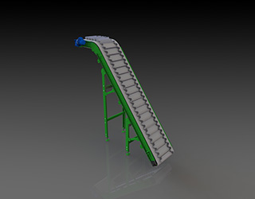

Конвейерное оборудование
Г-образный ленточный конвейер
О Г-образном ленточный конвейер
Г-образный конвейер – это одна из разновидностей наклонного ленточного транспортера.
Этот транспортер идеально подойдет Вам при волновой транспортировке, где нужен спуск продукции.
В сущности, это просто перевернутый L-образный ленточный транспортер, нацеленный на верхнюю загрузку.
К примеру, данный транспортер используется в пищевой промышленности, где нужно опустить морковь в охлаждающую ванну, установленную в полу.
Популярные варианты применения:-
для перемещения различного вида тары:
- Мешков;
- Ящиков;
- Коробок;
- для рассыпных пищевых продуктов и полуфабрикатов;
- для мелких и гранулированных грузов:
- Гравия;
- Опилок;
- Мусора;
- Других отходов;
- для сыпучих объектов:
- Щебня;
- Песка;
- и т.п.
Стоимость Г-образного транспортера с габаритами L2630x500 (загрузка 2600, выгрузка 500) составит 76 000, а изготовление займет 10 дней.
Вы можете самостоятельно подобрать Г-образный ленточный транспортер, воспользовавшись нашей таблицей подбора. Или связаться с нами любым удобным для Вас способом, и наши менеджеры с удовольствием подберут для Вас подходящий ленточный конвейер, а инженер планировщик разработает ленточную линию специально под Ваши потребности.
| Спецификация | |||
| Максимальная нагрузка | кг/м | 30 кг | |
| Скорость | м/мин | До 30 | |
| L | Длина транспортирования | мм | До 10 000 |
| L1 | Длина наклонного участка | мм | До 5 000 |
| L2 | Длина горизонтального участка | мм | До 9 000 |
| A | Угол | мм | До 75o |
| B | Рабочая ширина (кратность 50) | мм | 300-1000 |
| H1 | Высота загрузки минимальная | мм | 200 |
| H2 | Высота выгрузки | мм | - |
| DB | Диаметр ведущего вала | мм | 108, 127 |
| DX | Диаметр холостого вала | мм | 108, 127 |
Производство, шоурум и офис находятся по адресу: Г.Москва, Шоссе Энтузиастов, дом 56 стр 47
Записаться на просмотр можно по телефону: +7 (495) 518-98-41
Более подробная информация указана на нашем сайте ZAVOD-CONVEYER
С данным транспортером так-же смотрят:
Предложения:
Z-образные ленточные конвейера
Наклонные ленточные конвейера
Прямые ленточные конвейера
L-образные ленточные конвейера
Желобчатые ленточные конвейера